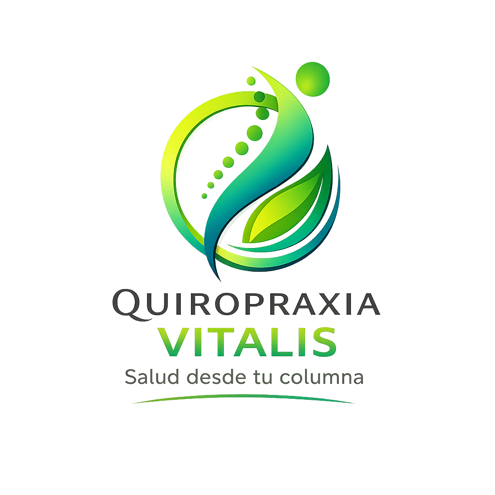

Recuperá tu bienestar de forma natural, sin medicamentos ni cirugías. Ajustes quiroprácticos personalizados para mejorar tu calidad de vida.

La quiropráxia es una disciplina de la salud que se enfoca en el diagnóstico, tratamiento y prevención de los trastornos del sistema musculoesquelético, con especial atención a la columna vertebral y su relación con el sistema nervioso.
A través de ajustes manuales precisos, busca restaurar la alineación natural del cuerpo para que pueda autorregularse y sanar de forma natural, sin necesidad de medicamentos ni cirugías.
Un enfoque integral que combina ciencia, movimiento y bienestar para mejorar tu calidad de vida desde adentro hacia afuera.
"El cuerpo humano tiene una capacidad innata de sanar. La quiropráxia simplemente abre el camino."Lic. Martín Fama · Quiropráxia Vitalis
Cada ajuste está orientado a restaurar el equilibrio de tu cuerpo y potenciar tu bienestar de forma duradera.
Reducción del dolor de espalda, cuello, cabeza y articulaciones mediante ajustes precisos que liberan la presión sobre los nervios, sin recurrir a fármacos.
Identificación y corrección de subluxaciones vertebrales causadas por malos hábitos posturales, sedentarismo o lesiones, restaurando la alineación de la columna.
Los ajustes quiroprácticos reducen contracturas, aumentan el rango de movimiento articular y optimizan el rendimiento físico, el equilibrio y la agilidad.
Al liberar tensiones en la columna, se regula el sistema nervioso autónomo, favoreciendo el descanso, la recuperación y la reducción del estrés crónico.
La manipulación espinal alivia la tensión acumulada en cuello y base del cráneo, siendo una alternativa eficaz para el manejo de dolores de cabeza frecuentes.
Un plan de cuidado regular ayuda a prevenir lesiones futuras, fortalecer el sistema inmunológico y mantener el cuerpo en su máximo potencial a largo plazo.
Licenciado en Kinesiología y Fisiatría con especialización en quiropráxia, dedicado al cuidado integral de la salud musculoesquelética y el bienestar de sus pacientes.
Con una visión holística del cuerpo humano, combina técnicas de ajuste quiropráctico, terapia manual y educación postural para abordar la causa raíz del dolor y no solo sus síntomas.
Su compromiso es acompañar a cada paciente en el camino hacia una vida más activa, libre de dolor y en pleno equilibrio.
Estamos en Rosario, listos para atenderte.
Dirección
Zeballos 1281, Rosario
Teléfono / WhatsApp
340 066-9101Horarios
Lunes a Viernes
10:00 hs — 14:00 hs
Reservá tu turno hoy y descubrí cómo la quiropráxia puede transformar tu calidad de vida.
Reservar mi turno